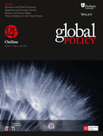
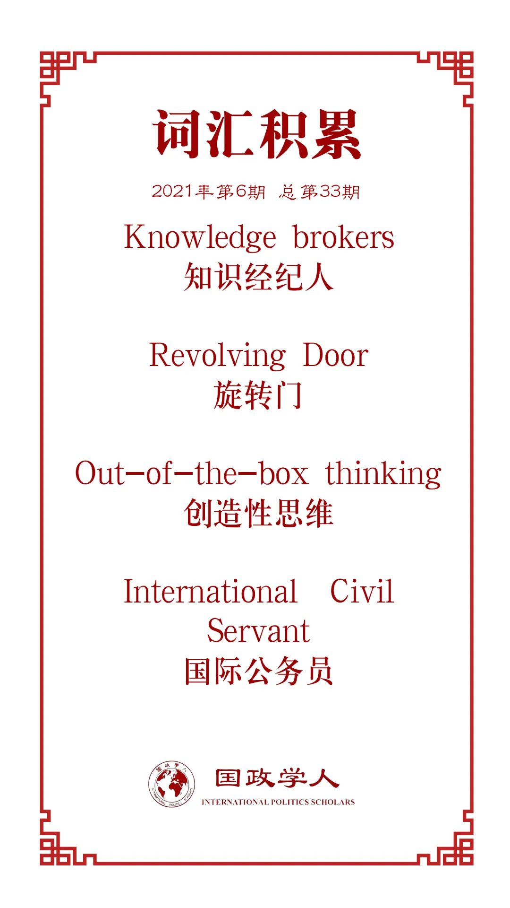

收录于合集

作品简介
【作者】 Tatiana Carayannis，社会科学研究委员会冲突预防、和平论坛和理解暴力冲突项目主任。本文选自她即将出版的《第三联合国：知识生态如何帮助联合国思考》（ The ‘Third’ United Nations: How A Knowledge Ecology Helps the UN Think ）。
Thomas G. Weiss，纽约城市大学首席教授，拉尔夫·邦奇国际问题研究所荣誉董事，国际研究学会（ISA）第四十九任（2009-2010）主席。其著作包括：《反思全球治理》（ Rethinking Global Governance ）、《联合国与变化中的世界政治》（ The United Nations and Changing World Politics ）、《这个世界没有联合国会更好吗》（ Would the World Be Better without the UN? ）等。
【编译】 缪高意（国政学人编译员，约翰霍普金斯大学保罗尼采高级国际关系研究院硕士研究生）
【校对】 唐一鸣 孟晓宇
【审核】 阮镇炜
【排版】 石寒冰
【美编 】臧泽华
【来源】 Carayannis, Tatiana, and Thomas G. Weiss. “The ‘Third’UN: Imagining Post‐COVID‐19 Multilateralism.” Global Policy 12.1 (2021): 5-14.
【归档】 《国际关系前沿》2021年第6期，总第33期。
期刊简介

《全球政策》（ Global Policy ）是一本创新的跨学科杂志，汇集了世界一流的学者和领先的实践者，旨在分析全球问题的公共和私人解决方案。2019年该杂志影响因子为1.238。
The ‘Third’ UN: Imagining Post-COVID-19 Multilateralism
“第三”联合国：想象后疫情时代的多边主义
Tatiana Carayannis
Thomas G. Weiss
内容提要
如果联合国想要维持自身在国际体系中的核心地位，甚至说是继续“生存”，那么就应该考虑第三联合国，以 重新想象和设计当代全球治理理念 。本文关注支持联合国的非国家行为体生态。非国家行为体包括知识分子、学者、咨询顾问、智库、非政府组织、营利性私人部门以及媒体，它们与第一联合国（政府间机制）、第二联合国（国际公务员）互动，制定和完善政策制定中的想法和决策。尽管对全球治理中非国家行为体的分析日益增多，但是，关于其他或第三联合国的研究仍然处于边缘。现有的研究成果中，部分学者提出特定想法，其他学者帮助分析，或将检验和实施付诸实践。无论如何，许多人都在帮助联合国“思考”，并对我们如何看待联合国产生影响。
政策启示 ****
1. 联合国审议的创造性思维不仅仅依靠政府官员和国际公务员，独立分析人员同样值得信赖。
2. 政府和慈善机构应为全球规范、标准、政策和宣传提供更多核心和自愿的联合国预算资源，从而使政策摆脱只言片语的决断，更加基于证据。
3. 要扩展公私知识分子与政策的关系，重新想象我们在复杂、相互关联和焦虑的世界中如何工作、交流和思考。
4. 当前，新的民族主义和民粹主义正在扩散，我们应该抓住全球新冠大流行和气候变化的时机，强调有意义的国际合作。
文章导读
新冠全球大流行时代产生了新的交往与社会正义运动形式，强调了新的公民政治的必要性。同时，新冠疫情和气候变化也让我们见识了真正的全球危机是什么样的。作为以国家行为体为基础的机构，联合国能够应对当前的跨国危机吗？联合国是否能足够灵活地适应和应对新的现实？作者认为，联合国并没有准备好应对现在的挑战。
如果世界组织和联合国体系想要变得更有效，甚至在未来继续生存，就需要考虑我们十年前提起的第三联合国，重新构想和设计当代全球治理理念。文章正是讨论这个问题。文章首先给出第三联合国的定义，接着讨论后疫情时代的政治和多边治理的维度。文章最后总结了包括第一、第二、第三联合国在内的“完整”联合国是如何思考世界的。
01
什么是第三联合国？
第三联合国是支持联合国的非国家行为体生态，具体包括知识分子、学者、咨询顾问、智库、非政府组织、营利性私人部门以及媒体。第三联合国与第一联合国（政府间机构）和第二联合国（国际公务员）互动，制定和完善政策过程中的想法和决策。
第三联合国的作用包括研究、政策分析、思想传播、宣传和公共教育。 第三联合国内的各个行为体提出新的信息和想法，推动替代政策，并围绕联合国的审议和项目动员公众舆论。第三联合国还可以通过同样的方法阻碍联合国的进展，影响地缘政治动态和左右世俗宗教社会斗争的两极分化，帮助联合国“思考”。一些第三联合国行为体提出特定想法，而另一些行为体则帮助分析或实施这些想法。第三联合国的参与程度因议题、地区和时间而异。在任何时候，各类非国家行为体都可能成为第三联合国的一员。换言之，第三联合国没有进入或退出障碍，也没有常任一说。
此外，对于第三联合国的许多行动体而言，向联合国决策提供信息不是他们的唯一任务，甚至不是他们的首要任务。但对研究联合国的学者来说，这是联合国的基本特征。第三联合国各类非国家行为体主导的治理在理念、技术和实际解决方案方面给联合国提供了很多帮助。
02
知识经纪人及其职能
（一）知识经纪人
过去二十年，“知识经纪人”（Knowledge brokers）这一概念被更多地提起：他们的工作是让知识四处流动，并在研究人员与其不同受众之间建立联系。具体言之，知识经纪人促进政策或学术研究人员和从业者之间的知识转让。自联合国成立以来，作为知识体系的第三联合国便为这个政府间机制提供智力支持。第一、第二和第三联合国加起来是一个持续发展、共生的知识经济体。这个知识经济体自1945年以来积累的经验已在不同程度上被成功利用，以应对全球艰难挑战。
联合国解决时下问题，以及在相关领域的智力投入需求突出了外部伙伴的重要性。外部伙伴即来自第三联合国的知识经纪人，特别是那些经验丰富的观察员（有些是前工作人员）。这些知识经纪人熟悉联合国的运作模式，致力于知识共享、使用和创新等工作。知识经纪人的政策建议会是联合国正式雇员做决定的参考。因为，决策者常常被信息轰炸，被繁忙的日常琐碎所困扰，没有办法对一个问题持续深挖。同时，他们也被繁忙的日常琐碎所困扰。此外，由于公务员从地方到总部，从秘书处到体系内其他部门的轮换，其政策分析需求大大提高。联合国的公务员轮换有助于多边外交、机构间合作、吸取经验教训和提高士气，但是也导致了体系内的公务员没有办法保持对某个具体问题和区域的持续追踪和理解。因此，对于富有想象力的联合国员工来说，寻求外部提案来掩护自己的不专业便是很有用的。
与联合国员工体系的互动为知识经纪人提供机会，使其能够通报和制定政策；了解联合国的限制也有助于外部机构和个体制定自己的政策工作。经纪人必须与决策者保持足够的距离，以便实时了解他们的要求，但离政策进程又要足够远，以保持分析合法性和独立性。
需要加以区分的是，联合国决策者讨论的是“知识经纪人”，而不是智库。联合国的知识经济形式多样，也包括人力资本“旋转门”。许多人在第一、第二和第三联合国内参与不同的角色，他们被包括在更大的社会网络中。
（二）知识经纪人的职能
知识经纪人最基本的职能是 内部研究产出知识 。此外，知识经纪人还有很多其他职能。
第一，知识经纪人负责将知识从学术机构和非政府组织转移到政府和联合国秘书处。这往往需要确定和管理研究产出。这些产出可能会纳入联合国的政策讨论，并有助于输出经纪人认为能够帮助决策者有效解决具体问题所必需的知识。
第二，知识经纪人也致力于翻译和传达。翻译有两个要素：首先，翻译需要接受复杂的想法和行话，并将其翻译为对实践者而言可读且可理解的内容。其次，翻译需要将研究论文和学术出版物中的观点重新组织成可操作的建议。
第三，知识经纪人的另一个重要职能是将行为体聚集在一起，促进非正式场合中有实质意义的对话。
知识经纪人的作用，特别是那些被认为是可信的“诚实经纪人”角色，有助于第一和第二联合国确定何时根据外部行为体提供的信息和想法采取行动，因为他们知道这种分析在政策过程中的时机和重要性。有效的知识经纪人可以通过首先确保联合国对外部政策建议的需求，并经常通过观察和追踪过程，最大限度地提高其知识的有用性。
03
重新想象全球制度的未来
为了更加公正的世界秩序，联合国各主要组织应该做什么呢？这个答案可能是多样的，但是毋庸置疑，第三联合国的重要性日益凸显。如果联合国想要继续生存，在全球制度中发挥重要作用，那么就要重视第三联合国。
当前，应对世界挑战的绝大部分良方来自第三联合国。成功的国际合作依赖三边合作。成员国及其政府，以及联合国秘书处都是重要的，但是，他们也不能忽视第三联合国行为体和他们向社会宣传的能力。国家和国际公务员必须与世界舞台上的众多行为体合作。同时，非国家行为体也是地方治理的关键，特别是在国家软弱或具有掠夺性的地方。第三联合国不仅可以在制定国际公共政策和监督承诺方面发挥重要作用，在日后还可以发挥更强大的作用。
如前所述，第三联合国中的许多行动体规模更小、更灵活、网络更完善，而且较少受到来自政府和秘书处的初高级官员参加的论坛审议的制约。此外，第三联合国的智囊团和知识经纪人不仅可以充当知识和政策之间的桥梁，而且越来越多地跨越决策者和公众——这对于让不情愿的政府参与其中至关重要。第三联合国行为体需要知道什么时候提出想法，什么时候发出声音，什么时候让第一和第二联合国为这些倡议负责。简言之，经纪人也必不可少，他们是第三联合国和第一、第二联合国的润滑剂。
但是，我们也不能忽视国家行为体和联合国官员的作用。尽管非国家行为体有能力跨越国界建立网络，但它们在全球治理中存在局限。没有国家和联合国秘书处协助的非国家行为体无法消除全球化造成的贫困，解决全球变暖问题，或制止大规模谋杀和移民。各国政府，尤其是联合国官员，需要正视自己的责任。第一、第二联合国要突破官僚机构的限制，更好地利用来自第三联合国的一流知识分子网络，为第三联合国提供更多的支持，加强联动和合作。
文章认为，未来关于全球制度的理想一步是加强第一、第二和第三联合国之间的伙伴关系。特别是，从历史经验中总结出如何充分利用第三个联合国。
04
结论
当前寻求其他多边解决办法的趋势是不可避免的，这也必将损害联合国的独特地位。如果全球治理是在联合国之外展开的，那么日后庆祝联合国一百周年又会有什么意义呢？如果那时候联合国还存在的话，它会是一个遗迹还是世界秩序的重要组成部分呢？
未来几十年，人类社会可能经历前所未有的经济、政治、社会、健康和生态剧变，剧变也将带来机遇。对于联合国而言，想要继续生存， 当前最紧迫的任务就是巩固体系摇摇欲坠的基础，建立知识联盟。第一、第二和第三联合国的紧密合作将为整个联合国赋予新的生命，以应对未来的挑战。
译者评述
新冠疫情是二战后影响最深远的全球公共卫生事件，许多国际关系学者也在此背景下反思国际秩序与全球治理，本文同样是基于此背景，对联合国以及全球治理进行反思。本文是概述性的，介绍了第三联合国的定义、角色和未来的可能性。除了精彩的论述，本文更重要的是富有启示意义，将人们的关注点聚焦于非国家行为体。
当前，在解决全球治理的具体议题中，非国家行为体发挥了越来越重要的作用。正如美国学者肯尼思·阿博特、罗伯特·基欧汉等人所言，政府间组织将不再是占主导地位或增长最快的全球治理制度形式。甚至，近年来扩展的公共权威网络将不再必须包括政府间组织和国家行为体。尽管学术界有了更多关于国家行为体参与全球治理的思考，但是，人们还是常常忽视第三联合国，对此的研究甚少。在未来，应该有更多关于非国家行为体参与联合国以及全球治理的研究，非国家行为体值得更多的关注。一方面，它们以新的形式参与全球治理，克服国家行为体和联合国机构陷入的政治僵局。另一方面，它们提供了全新的知识和理念解决当前棘手的全球问题，并可能重新塑造政治秩序。
自联合国成立六十周年之后，关于联合国改革的呼吁和讨论便一直持续不断。除了内部调整，听到更多的声音同样重要。非国家行为体将在后疫情时代的联合国发挥更重要的作用。联合国并不需要为融入非国家行为体建立政治机制，但是需要转向一种后官僚化、层级较少、网络化程度更高的组织政策模式，将思维分散到决策过程的各个层面。
词汇整理

文章观点不代表本平台观点，本平台评译分享的文章均出于专业学习之用, 不以任何盈利为目的，内容主要呈现对原文的介绍，原文内容请通过各高校购买的数据库自行下载。
好好学习，天天“在看”

国政学人
支持学术公益与知识传播
微信扫一扫赞赏作者 __赞赏
已喜欢，对作者说句悄悄话
取消 __
发送给作者
发送
最多40字，当前共字
上一页 1/3 下一页
长按二维码向我转账
支持学术公益与知识传播
受苹果公司新规定影响，微信 iOS 版的赞赏功能被关闭，可通过二维码转账支持公众号。